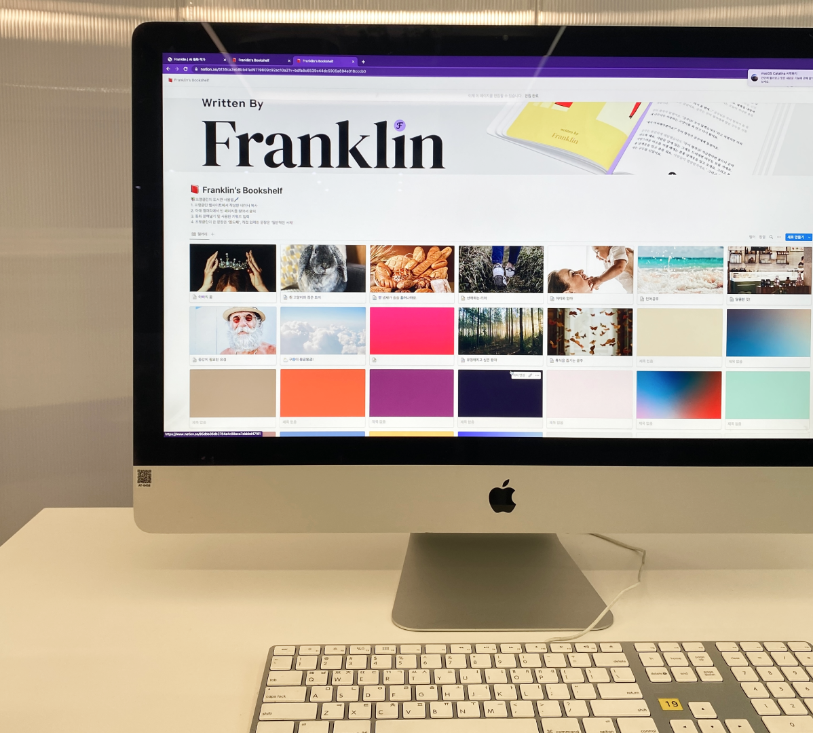

Yewon Jang°
Tool Maker
Franklin
2022
A gender-neutral Korean fairy tale generator using AI, addressing social
biases in children's literature.
Trained language models to self-diagnose bias, creating 'Franklin,' an AI storyteller which reinterprets fairy tales through an equitable lens. 'Franklin' collaborates with users to create stories while fostering empathetic, horizontal relationships between AI and humans.
Trained language models to self-diagnose bias, creating 'Franklin,' an AI storyteller which reinterprets fairy tales through an equitable lens. 'Franklin' collaborates with users to create stories while fostering empathetic, horizontal relationships between AI and humans.
1. Key Question
Why don't fairy tales show female protagonists slaying dragons while male protagonists wear glass slippers and dance?
2. Motivation
While the formats through which children encounter fairy tales have diversified, Korean fairy tales still contain biased clichés and prejudices.

3. Process
3-1. Dataset Refinement

We refined 1600 copyright-free Korean fairy tales through the UnSmile Dataset and used a total of 1197 Korean fairy tales as learning materials.
3-2. Debiasing

We applied a de-biased approach that adjusts word embeddings based on the female and male word axes.
3-3. Web Flow, Prompt Engineering

To compare the performance differences in the sentences generated by the prompts, we designed three different prompt structures as follows. First, the essential elements of a fairy tale are characters, setting, and events. The text generated by the model corresponds to the events. We allowed users to customize the characters and background elements. Among them, we prepared 'keywords', which are words that help the direction of the story, 'title', which has an implied meaning for the story, and 'plot', which summarizes important events in the story. Three datasets were built by combining the three elements appropriately. We fed the same inputs to the model trained with the three datasets and extracted the text. Table 11, Table 12, and Table 13 show examples of each dataset's composition and output.
We generated 10 fairy tales for each of the three prompt styles, 10 for fantasy and 10 for everyday life, for a total of 100 fairy tale texts for each model, and calculated the PPL values and compared the arithmetic mean values. As a result, we found that method 1 had the lowest sentence complexity evaluation, which was used to construct Web Flow.
We generated 10 fairy tales for each of the three prompt styles, 10 for fantasy and 10 for everyday life, for a total of 100 fairy tale texts for each model, and calculated the PPL values and compared the arithmetic mean values. As a result, we found that method 1 had the lowest sentence complexity evaluation, which was used to construct Web Flow.


Team
Jiin An,
Saetbyeol Leeyouk,
Advised by Dasaem Jeong
Role
AI engineer lead in Coherency
- Engineered AI coherency improving process using reinforce Algorithm
- Developed sentiment analysis & hate speech detection software of data preprocessing process
- Developed AI model serving pipeline using FastAPI of the website
- Engineered AI coherency improving process using reinforce Algorithm
- Developed sentiment analysis & hate speech detection software of data preprocessing process
- Developed AI model serving pipeline using FastAPI of the website
Funded by
SmileGate AI Membership
